CtrlCoMo: Controllable Co-Speech Motion Generation with Gesture-Action Disentanglement
Xinghan Wang1,2 , Ming Zhou2 , Yanbo Zheng2 , Youjiang Xu2 , Yuan Zhang2 , Mingyuan Gao2 , Nan Zhuang1 , and Yadong Mu1⋆
1 Peking University 2 ByteDance {xinghan_wang, myd}@pku.edu.cn
Abstract. Generating human motion synchronized with speech is essential for creating realistic virtual avatars. While recent work has made strides in generating gestures from speech, these approaches often fall short in enabling avatars to perform meaningful, context-specific actions. This paper presents CtrlCoMo, a motion generation framework that uses textual input alongside speech audio to provide explicit control over actions in co-speech scenarios. To address the interference between gestures and actions in co-speech motions, we introduce Pyramid-VQ, an autoencoder that separates gestures from actions through hierarchical quantization, with shallow layers capturing global semantics and deep layers encoding localized gestures, guided by layer-wise CLIP-based semantic regularization. Additionally, the model provides explicit control over gesture intensity via an AdaLN mechanism. For evaluation, we introduce CoHuMo, a large-scale co-speech motion dataset of 370 hours with rich human actions. This dataset encompasses a wide range of scene types and languages, providing a robust benchmark for future research. Extensive evaluations are conducted on CoHuMo which validate our model's effectiveness.
Keywords: Co-speech motion generation · Multimodal learning
1 Introduction
Generating human motion in co-speech scenarios is crucial for building virtual avatars that can speak and move naturally while interacting with users. Recent works [7, 8, 34, 40, 75, 90] achieved notable progress in generating coherent cospeech gestures from speech audio. However, in real-world applications, avatars must perform meaningful actions while speaking, rather than merely exhibiting rhythmic or beat-synchronized gestures. As depicted in Figure 1, under cospeech scenarios, a person performs specific actions while concurrently displaying speech-aligned gestures, both of which are essential for producing natural and expressive human motion.
⋆ Corresponding author.

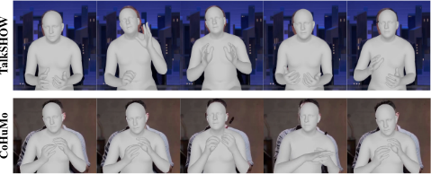
Motivated by this, we aim to develop a co-speech motion generation model that enables explicit control over concrete actions through textual descriptions, beyond mere gestures. However, achieving this goal presents two major challenges. The first lies in the inherent interference between gestures and actions in co-speech scenarios, where they often spatially and temporally overlap or conflict, making disentanglement difficult. As illustrated in Figure 1, consider a person playing the flute who begins speaking mid-performance. In this case, co-speech gestures naturally emerge and overlap with the ongoing flute-playing action. Such interference undermines the model's ability to capture the correspondence between text and action semantics, thereby reducing the controllability of the generated motions.
The second major challenge lies in the absence of suitable datasets that contain both co-speech gestures and meaningful actions. Existing co-speech motion datasets [34, 53, 75, 76] are mainly derived from conversational contexts such as TED talks, lectures, or news broadcasts, where body movements are dominated by co-speech gestures and lack semantically rich actions. In contrast, text-to-motion datasets (e.g., HumanML3D [19], KIT-ML [51]) contain diverse and complex actions but exclude co-speech scenarios. The absence of appropriate datasets severely limit the development of models capable of generating semantically rich and expressive co-speech human motions.
This work aims to attack both of the above challenges. Our key observation is that co-speech gestures generally consist of high-frequency, temporally localized movements, whereas semantic actions exhibit low-frequency, global temporal patterns. Motivated by this, we propose Pyramid-VQ, a residual-VQ-style autoencoder that encodes local gestures and global actions into separate VQ layers to achieve explicit decomposition. A standard residual VQ-VAE [30] achieves full reconstruction via multi-level quantization by progressively encoding the residuals of preceding layers, yet it lacks explicit constraints on the content or functional roles of different layers. Drawing inspiration from VAR [63], we explicitly control the temporal resolution of each VQ layer to enforce a coarseto-fine encoding hierarchy. Specifically, the shallower VQ layers operate at lower temporal resolution, capturing global action semantics, while the deeper VQ layers function at higher temporal resolution, encoding fine-grained local gesture details. To further encourage layer-wise information separation, a CLIP-based semantic regularization is introduced. By imposing a layer-wise decaying semantic constraint, the shallow layers are guided to align more closely with textual semantics. With these designs, Pyramid-VQ effectively disentangles co-speech gestures and semantic actions across distinct VQ layers. This enables quantitative measurement and explicit control of co-speech gesture intensity during generation, achieved via AdaLN-style modulation in the Transformer decoder, which predicts motion tokens from text and speech inputs in a coarse-to-fine manner.
For evaluation, we construct a large-scale co-speech motion dataset containing 370 hours of data with rich human actions across diverse scenarios. A semantic action data acquisition pipeline is built, covering video searching, segmentation, filtering, and annotation. Unlike previous datasets that mainly collect data from TED Talks or news broadcasts, the proposed dataset focuses on videos that emphasizing co-speech activities where people talk while performing actions. The resulting dataset spans 20+ scene types and 5+ languages, encompassing a large variety of human action data in natural co-speech scenarios. In summary, our contributions are two-fold:
- We address the interference between gestures and actions in co-speech scenarios by designing a Pyramid-VQ that disentangles them, enabling more precise action control through text as well as gesture intensity control.
- A new large-scale co-speech benchmark dataset is presented for evaluation, featuring 370 hours of motion data with rich actions across diverse scenarios.
2 Related Work
2.1 Co-speech Gesture Generation
Co-speech gesture generation has recently gained increasing attention due to its wide applications in 3D digital humans, gaming, and interactive avatars. Early works employed CNNs [17,21] and RNNs [32,39] to map acoustic/textual features to gestures, or utilized GANs [1, 6] to improve diversity and realism. In recent years, the emergence of stronger generative models has significantly advanced the field. A major direction focuses on discrete motion tokenization using vector-quantized variational autoencoder (VQ-VAEs) [3,7,34,36,38,40,60, 67,73,75,82,83,86]. For instance, EMAGE [34] and TalkSHOW [75] employ separate VQ-VAEs for different body parts to discretize motion into latent tokens, which are subsequently modeled by autoregressive or masking-based generators. Subsequent studies extend this line by exploring variants of VQ-VAE, such as PQ-VAE [40] and RVQ-VAE [7, 38,82], as well as structural latent space-such as coarse-to-fine generation [82] and semantic alignment [36]. Another line of work utilizes diffusion as the main workhorse [8, 10, 11, 43, 45, 69, 87, 90]. DiffGesture [90] proposes a conditional diffusion framework in gesture space, featuring a Diffusion Audio-Gesture Transformer to synthesize coherent and audioaligned co-speech gestures. DiffSHEG [8] presents a unified diffusion framework for real-time speech-driven synchronized 3D expression-gesture generation via expression-to-gesture flow and FOPPAS-based efficient synthesis. Some work also explores alternative directions, such as State Space Models (SSM) [15, 70] and RAG [37, 44, 71].
For the dataset part, pioneering works such as BEAT [35] and BEAT2 [34] collect data through motion capture (mocap), recruiting multiple speakers and recording their motions in conversational scenarios. Subsequent studies [75, 76] build datasets by collecting videos from news broadcasts or TED Talks and applying 3D fitting methods [58, 59, 75] to obtain pseudo-3D SMPL [41, 46, 56] annotations. However, these datasets remain relatively small in scale, and the diversity of speakers is still limited. More recently, CO3Gesture [53] expands the dataset to around 70 hours and further addresses multi-person interaction by introducing co-speech data involving two participants.
2.2 Text-based Motion Generation
Text-based motion generation aims to synthesize human motions that align with input textual descriptions, where the central challenge is to learn a reliable crossmodal mapping between language and motion. Early works [2,16,49,50,62] address this problem by constructing a shared embedding space for motion and text. To achieve this, they employ techniques such as CLIP-inspired contrastive objectives [62] or latent-space KL divergence [49]. Recent advances increasingly center around discrete autoregressive and diffusion modeling approaches. The former [20, 24,29, 42,64, 78, 84,88, 89,91] represent motions with discrete tokens and implement text-to-motion generation via next token prediction. A representative example is T2M-GPT [79], which uses a VQ-VAE to tokenize the motion and generates those tokens autoregressively from input text tokens. Others employ diffusion as their primary framework [4, 5, 9, 14, 23, 26-28, 31, 66, 68, 72, 74, 77, 81]. For instance, MotionDiffuse [80] proposes a DDPM-based architecture capable of synthesizing realistic motions with part-level controllability through denoising in the motion space. Some studies also apply diffusion in the latent space. For instance, MLD [9] first trains a motion VAE to compress motion into a low-dimensional latent representation, and then performs diffusion in the latent motion space conditioned on text and action. Despite these advances, most text-to-motion models are trained on action-centric datasets [13,19,33,51,65,85] which primarily feature coarse, global body movements. In co-speech scenarios, the spontaneous nature of gestures further complicates the learning of a direct text-to-action mapping, making the task substantially more challenging.
3 Dataset
This section provides a brief overview of the dataset construction process. The process begins with curating a high-quality co-speech dataset with diverse actions and scenarios. This dataset focuses on upper-body motion, emphasizing CtrlCoMo fine-grained actions and co-speech gestures. The construction process follows a rigorous pipeline as illustrated in Figure 2, with representative samples shown in Figure 3.

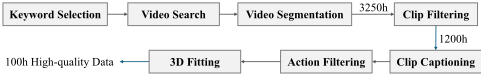

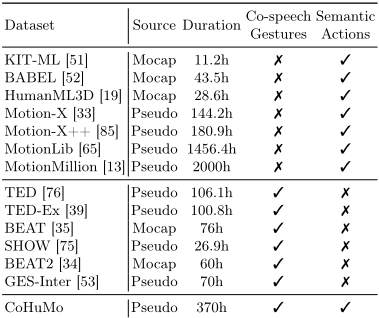
Recognized table text (check against the image)
| Dataset | Source | Duration | Co-speech Gestures | Semantic Actions |
|---|---|---|---|---|
| KIT-ML [51] BABEL [52] HumanML3D [19] Motion-X [33] Motion-X++ [85] MotionLib [65] MotionMillion [13] | Mocap Mocap Mocap Pseudo Pseudo Pseudo Pseudo | 11.2h 43.5h 28.6h 144.2h 180.9h 2000h 106.1h 100.8h 76h 26.9h | ✗ ✗ ✗ ✗ ✗ ✗ ✗ ✓ ✓ ✓ ✓ ✓ ✓ | ✓ ✓ ✓ ✓ ✓ ✓ ✓ ✗ ✗ |
| TED [76] TED-Ex [39] BEAT [35] SHOW [75] BEAT2 [34] GES-Inter | Pseudo Pseudo Mocap Pseudo Mocap | 60h 70h | ✗ ✗ | |
| 1456.4h | ||||
| ✗ | ||||
| [53] | Pseudo | ✗ | ||
| CoHuMo | Pseudo | 370h | ✓ | ✓ |
Data acquisition. A diverse set of keywords are employed which span a wide range of action scenarios to search videos from the database, which are prefiltered based on duration and resolution. Then videos are segmented into clips where upper-body keypoints (detected by YOLO [55]) are all visible, with bounding boxes covering at least 20% of the frame to ensure the human is not too small. This results in a total of 3250 hours of video clips.
Data filtering. To ensure data quality, rigorous filtering criteria are applied. First, Silero-VAD [61] is used to verify the presence of human speech, and SyncNet [12], which is language-agnostic, is employed to check audio-lip synchronization, thereby discarding dubbed or voice-over segments. We then assess the background optical flow to discard clips with significant camera motion, prioritizing stable, studio-like conditions. Additionally, clips exhibiting excessive subject movement are filtered out by enforcing an IoU threshold of 0.8 for the human bounding box, ensuring the subject remains relatively still.
Action filtering. To retain only the segments containing meaningful actions, Seed-1.6 is first employed to generate textual descriptions of human motion in each clip. These descriptions are then evaluated by GPT-4 to determine whether the segment exhibits meaningful action. Clips failing this evaluation are discarded.

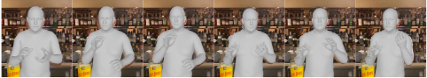

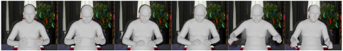
The man is sitting and talking, lowering his head to look at the keyboard while typing on it and gesturing with both hands.

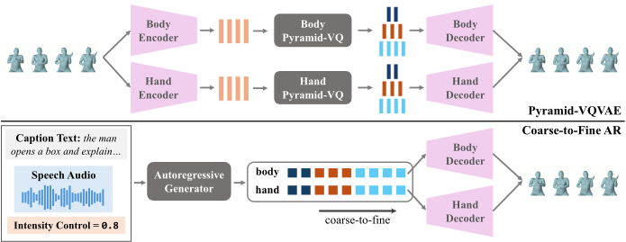
Fig. 4: Overall architecture of our proposed CtrlCoMo. Two independent Pyramid-VQ tokenizers are employed for the body and hands, each generating a hierarchy of discrete motion codes. During autoregressive synthesis, a coarse-to-fine schedule is applied, with global motion established at coarser levels and refined with gesture details at finer levels, conditioned on both text and audio inputs. Gesture intensity is controlled explicitly as an input signal, injected into the decoder Transformer via AdaLN-Zero.
3D motion annotation. For the remaining clips, we perform 3D motion fitting using an improved version of GVHMR [59], enhanced with HaMeR [47] and RTMPose [25], to obtain body and hand SMPL-X [46] annotations. This process yields approximately 100 hours of high-quality, action-rich co-speech motion data.
Additionally, we enriched the dataset by incorporating 270 hours of gesturefocused motion data, primarily featuring talking humans under diverse scenarios. This expansion aims to enhance the naturalness and expressiveness of co-speech gestures. In summary, the final CoHuMo dataset contains a total of 370 hours of co-speech motion data. About 10% of the dataset is held out for testing purposes.

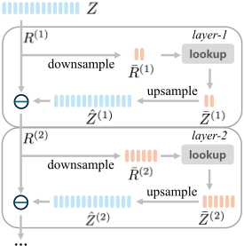
4 Method
We aim to disentangle low-frequency, global actions from high-frequency, local co-speech gestures at the representation level, enabling better text-action alignment and explicit control of gesture intensity. To this end, we propose PyramidVQ, a residual-style VQ-VAE that encodes motion at progressively finer temporal resolutions: shallow codes capture coarse global semantics, while deeper codes model fine-grained gesture details. A CLIP-based semantic regularizer further enforces the hierarchical separation. At inference, motion tokens are predicted from text and speech input in a coarse-to-fine manner. Gesture intensity can be inferred from the disentangled representation and incorporated into the Transformer decoder through AdaLN-style modulation, enabling explicit user control. The overall model, named CtrlCoMo, is illustrated in Figure 4, with further details elaborated in the following sections.
4.1 Pyramid-VQ
Multi-scale Quantization. Suppose X denotes the input motion sequence. Previous works [7,38,82] mostly employ a residual VQ-VAE [30] to encode motion sequence into discrete tokens. The encoder and decoder map between the motion and latent space as: Z = Enc(X), ˆX = Dec( ˆ Z). Then starting with R(1) = Z, each layer iteratively quantizes the residual to achieve full reconstruction: \hat {Z}^{(d)} &= \mathrm {lookup} \left (R^{(d)}\right )\\ R^{(d+1)} &= R^{(d)} - \hat {Z}^{(d)}. \label {eq:rvq_basic}

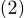
where lookup denotes the nearest-neighbor codebook lookup. While residual VQ effectively reconstructs motion sequences by stacking multiple quantization layers, it does not explicitly constrain the information encoded in each layer.
CtrlCoMo
7
Inspired by the multi-resolution quantization design in VAR [63], we explicitly bind each quantization layer to a specific temporal resolution scale. Different quantization layers operate at distinct temporal resolutions, allowing information of varying frequencies to be distributed across layers and facilitating the disentanglement of global actions from local gestures. Figure 5 depicts the structure of the proposed Pyramid-VQ. To be specific, let the initial residual be R(1) = Z ∈ RT×C . Then each layer d ∈ {1, 2, · · · L}, equipped with its codebook Cd = {e(d) k }Kd k=1 and assigned temporal scale Td ≤ T, quantizes the residual from layer d-1 as follows:

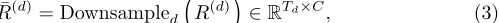

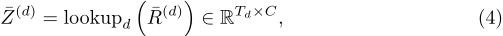

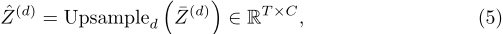

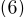
where lookupd denotes looking up the nearest entry in the corresponding codebook Cd, and Downsampled / Upsampled denote 1D linear interpolation operations along the temporal dimension. Temporal scales are set as T1 ≤ T2 ≤ · · · ≤ TL = T to impose a coarse-to-fine hierarchy. The final quantized latent ˆ Z = ∑Ld=1 ˆ Z (d) is acquired after L progressive quantization layers and then fed into the decoder to obtain the reconstructed motion ˆX:

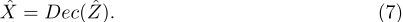
Downsampling acts as a low-pass filter, allowing the coarse layer to capture and encode only slowly varying global structures. As the residual is progressively refined, deeper layers-operating at higher temporal resolutions-naturally focus on high-frequency gesture details. Moreover, since global actions require broader coverage to represent diverse semantics, while local co-speech gestures can be modeled with smaller vocabularies, we adopt independent codebooks for each layer following a large-to-small codebook size schedule (i.e., K1 > K2 > · · · > KL), aligning representational capacity with scale.
CLIP-based semantic regularization. To further encourage information disentanglement across layers, a CLIP-based semantic regularization is introduced. Unlike the global text-motion alignment loss in MotionCLIP [62], our goal is to guide shallower VQ layers to align more closely with textual semantics, thereby capturing global, text-related actions, while deeper VQ layers focus on co-speech gesture details. Specifically, at each layer d, we compute the cosine similarity between the CLIP text embedding Zclip and the quantized latent representation ¯ Z (d) from Equation 4, and maximize this similarity. The regularization strength gradually decays with increasing depth:

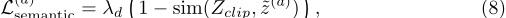
where ˜ z(d) = 1 T ∑Tt=1 ¯ Z (d) denotes the temporal mean pooling of ¯ Z (d) , and 'sim' denotes cosine similarity. The strength coefficient λd is computed as

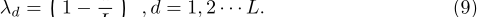
The intuition is that the shallow semantic layers receive the strongest CLIP guidance, and the influence gradually decreases to zero as the layer depth increases. The final training objective for Pyramid-VQ with CLIP-based semantic regularization is:

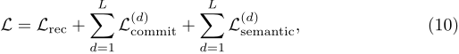
where Lrec is the reconstruction loss and L(d) commit is the commitment loss for layer d. The codebook is updated through Exponential Moving Average (EMA).
4.2 Intensity-aware Hierarchical Generator
Coarse-to-fine autoregressive generation. Following prior practice [7, 34, 75, 82], two independent Pyramid-VQ tokenizers are trained for the body and the hands respectively. Each tokenizer produces an L-level hierarchy of discrete codes. During autoregressive (AR) synthesis, we adopt a coarse-to-fine schedule so that global motion is first established at coarse levels and progressively refined with gestures at finer ones. For each part ∈ {body, hand}, tokens from all levels are flattened in a fixed order (coarse→fine) to form the token sequence:

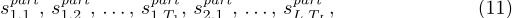
where sd,j denotes the j-th token at pyramid level d. We decode in this order with a causal mask, allowing each position (d, j) to attend to all tokens from coarser levels (< d) and to earlier positions within the current level (d,< j). At step (d, j), a decoder Transformer with cross-attention to the conditioning inputs c (text and audio features) produces a shared hidden state

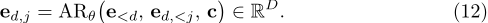
Then two convolutional output heads gbody, ghand map this state to logits over the respective part-wise VQ codebooks:

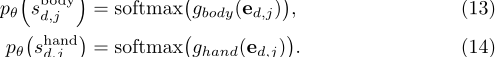
The shared hidden state ensures temporal and semantic synchronization between body and hand motions.
Gesture intensity control. Our model achieves explicit control over gesture intensity by leveraging the action-gesture disentangled representation learned by Pyramid-VQ. Here, gesture intensity refers to the strength or proportion of cospeech gestures within a human motion sequence. As Pyramid-VQ factorizes motion across multiple scales, a reconstruction using only the shallower layers predominantly captures coarse, global action components. Consequently, the reconstruction error using only these shallower layers is indicative of the gesturerelated component. Formally, let L denote the total number of VQ layers, X the ground-truth motion, and ˆZ(d) the quantized latent at depth d. The partial reconstruction using the first l layers is defined as

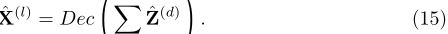
and the reconstruction error is given by Ed = |X- ˆX(d) |2F . We define the intensity signal by contrasting the shallow-only error with the full-stack error, where the latter serves as a content-dependent regularization term:

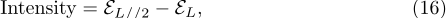
This scalar control, after being scaled to [0,1], is injected into the autoregressive decoder via AdaLN-Zero [48]. During training, we randomly drop the intensity input with probability pintensity, enabling the model at test time to use either a user-defined intensity or its learned prior. This design allows controllable co-speech gesture intensity conditioned on text-driven semantics.
5 Experiments
5.1 Experimental Setup
Evaluation Metrics. The evaluation metrics are designed to assess both the naturalness of the generated motions and their semantic correspondence with the input text. We adopt the following metrics: (1) Frechet Gesture Distance (FGD) [22], which measures the distance between the feature distributions of generated and real motions; (2) MAJE (Mean Average Joint Error), which computes the average Euclidean distance between predicted and ground-truth joint positions across all frames; (3) R-Precision, which evaluates motion-to-text retrieval accuracy within a batch of 32 samples; (4) Multimodal Distance (MMDist), which quantifies the Euclidean distance between the feature representations of text and motion. To obtain the embedding space for metric computation, we adopt the autoencoder-based feature extractor from MoMask [18] and pretrain it on the CoHuMo dataset.
Implementation Details. Following [40, 75], the encoder and decoder are constructed by 1D convolutions with 8× down-/up-sampling blocks. The feature space dimension is set to 512. The autoregressive (AR) generator is a 12-layer decoder-only Transformer with AdaLN-Zero modulation for intensity-conditioned injection. Text and audio conditions are incorporated through cross-attention, where the text embedding is extracted from CLIP [54], and the audio condition is represented by MFCC features [57]. The Pyramid-VQ consists of L = 10 quantization levels. The codebook size is halved every two layers, decreasing from 512 for the first two levels to 32 for the last two, in order to address the capacity discrepancy between the action and gesture layers mentioned earlier. The temporal scales {Td}Ld=1 are configured as {2, 2, 3, 4, 5, 6, 7, 8, 11, 22}, where 22 denotes the full-resolution sequence (input length 176 with 8× downsampling; 176/8 = 22). pintensity is empirically set to 0.35. Both the VQ and AR modules are trained for 250k iterations with a learning rate of 1e - 4 on four NVIDIA A800 GPUs.

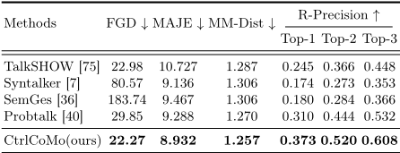
Recognized table text (check against the image)
| Methods | FGD ↓ | MAJE ↓ | MM-Dist ↓ | R-Precision ↑ | ||
|---|---|---|---|---|---|---|
| Top-1 | Top-2 | Top-3 | ||||
| TalkSHOW [75] | 22.98 | 10.727 | 1.287 | 0.245 | 0.366 | 0.448 |
| Syntalker [7] | 80.57 | 9.136 | 1.306 | 0.174 | 0.273 | 0.353 |
| SemGes [36] | 183.74 | 9.467 | 1.306 | 0.180 | 0.284 | 0.366 |
| Probtalk [40] | 29.85 | 9.288 | 1.270 | 0.310 | 0.444 | 0.532 |
| CtrlCoMo(ours) | 22.27 | 8.932 | 1.257 | 0.373 | 0.520 | 0.608 |

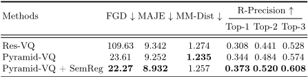
Recognized table text (check against the image)
| Methods | FGD ↓ | MAJE ↓ | MM-Dist | R-Precision ↑ | ||
|---|---|---|---|---|---|---|
| Top-1 | Top-2 | Top-3 | ||||
| Res-VQ | 109.63 | 9.342 | 1.274 | 0.308 | 0.441 | 0.528 |
| Pyramid-VQ | 23.61 | 9.252 | 1.235 | 0.344 | 0.484 | 0.574 |
| Pyramid-VQ + SemReg | 22.27 | 8.932 | 1.257 | 0.373 | 0.520 | 0.608 |
5.2 Quantitative Results
Comparison with baselines. We first compare our model with representative cospeech motion generation methods. For approaches without textual input, we add a cross-attention module to incorporate text for fair comparison, and omit ID control by setting it to zero. As shown in Table 2, CtrlCoMo consistently outperforms all baselines across metrics, demonstrating the effectiveness of our architecture.
Ablation Studies. To assess the contribution of each component, we conduct ablation studies summarized in Table 3. The Pyramid-VQ multi-scale quantization design is first examined by replacing it with a plain multi-layer residual VQ, denoted as 'Res-VQ', where each layer uses the same number of codebooks. As shown, performance drops markedly: without the Pyramid-VQ, the model struggles to capture the interleaved dynamics of gestures and actions and fails to learn a reliable mapping from text to action. The effect of CLIP-based semantic regularization (denoted as 'SemReg' in the table) is also validated, which yields consistent gains, confirming its role in facilitating layer-wise information decoupling.

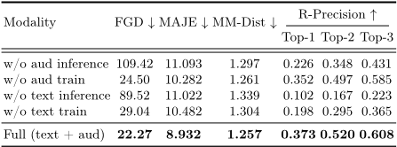
Recognized table text (check against the image)
| Modality | FGD ↓ | MAJE ↓ | MM-Dist | ↓ R-Precision ↑ | ||
|---|---|---|---|---|---|---|
| Top-1 | Top-2 | Top-3 | ||||
| w/o aud inference | 109.42 | 11.093 | 1.297 | 0.226 | 0.348 | 0.431 |
| w/o aud train | 24.50 | 10.282 | 1.261 | 0.352 | 0.497 | 0.585 |
| w/o text inference | 89.52 | 11.022 | 1.339 | 0.102 | 0.167 | 0.223 |
| w/o text train | 29.04 | 10.482 | 1.304 | 0.198 | 0.295 | 0.365 |
| Full (text + aud) | 22.27 | 8.932 | 1.257 | 0.373 | 0.520 | 0.608 |

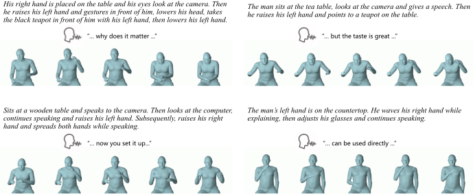
Effect of input condition modalities. To explore the roles of text and speech input, we remove either condition during inference only or during both training and inference. Results are presented in Table 4, where 'w/o text(aud) inference' removes the corresponding condition only at inference, and 'w/o text(aud) train' removes it during both training and inference. The findings indicate that both modalities are beneficial. In particular, removing the textual input severely degrades R-precision, underscoring that text provides crucial semantic guidance for action control.
Data scaling-up. To evaluate the effect of data scale, we increased the training set from 10k to 200k samples while keeping the number of training iterations fixed. As shown in Table 5, performance steadily improves with more data, underscoring the importance of dataset scaling. Given the limited size of existing co-speech motion datasets, these results highlight data expansion as a key factor for future progress in this field.

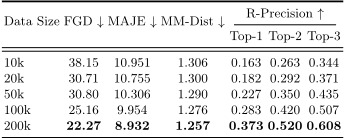
Recognized table text (check against the image)
| Data Size FGD ↓ MAJE ↓ MM-Dist ↓ | R-Precision ↑ | |||||
|---|---|---|---|---|---|---|
| 10k | Top-1 | Top-2 | Top-3 | |||
| 38.15 | 10.951 | 1.306 | 0.163 | 0.263 | 0.344 | |
| 20k 50k | 30.71 30.80 | 10.755 10.306 | 1.300 1.290 | 0.182 0.227 | 0.292 0.350 | 0.371 0.435 |
| 100k | 25.16 | 1.276 | 0.283 | 0.420 | ||
| 200k | 22.27 | 9.954 8.932 | 1.257 | 0.373 | 0.520 | 0.507 0.608 |

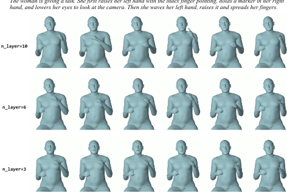
5.3 Visualizations
Gesture-action decoupling. To highlight the impact of gesture-action decoupling enabled by Pyramid-VQ, we provide visualizations of reconstructed motions using varying numbers of quantization layers. Specifically, for a given depth l, the reconstructed motion is derived as:

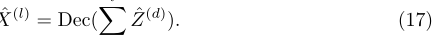
Figure 7 presents results for l = 3, 6, 10. As shown, shallow layers capture coarse global semantics, while progressively adding deeper layers refines the motion with increasingly detailed and localized co-speech gestures.

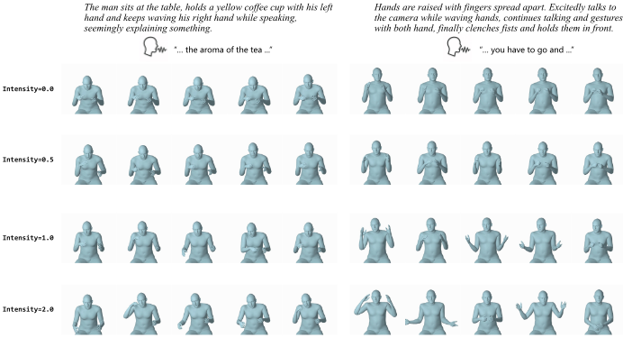
Speech and text driven generation. Figure 6 illustrates representative samples from our complete generation pipeline. Motions are driven not only by action semantics derived from the text but also by rhythmic co-speech gestures aligned with the audio.
Gesture intensity control. To evaluate the effect of intensity control, we present qualitative results in Figure 8. As shown, for the same textual prompt, increasing the intensity results in a monotonic amplification of co-speech gestures, while keeping the base semantic action intact. Additional results can be found in the supplementary video demo.
6 Conclusion
This work presents a motion generation framework that produces human motions with co-speech rhythmic gestures aligned with speech audio while enabling controllable actions through text descriptions. We address the key challenge of gesture-action interference in co-speech scenarios by introducing Pyramid-VQ, a hierarchical VQ-VAE that disentangles co-speech gestures and semantic actions into separate quantization layers. Built upon these disentangled representations, we achieve explicit gesture intensity control by modulating the generator via AdaLN. To overcome the limitations of existing co-speech datasets that lack meaningful actions, a new large-scale co-speech motion dataset named CoHuMo is constructed, comprising 370 hours of data with diverse actions and scenarios. Extensive experiments demonstrate the effectiveness of our approach.
Acknowledgement. The research is supported by a collaboration between Peking University and Bytedance (No. CT20250811106734).
References
1. Ahuja, C., Joshi, P., Ishii, R., Morency, L.P.: Continual learning for personalized co-speech gesture generation. In: Proceedings of the IEEE/CVF international conference on computer vision. pp. 20893-20903 (2023)
2. Ahuja, C., Morency, L.P.: Language2pose: Natural language grounded pose forecasting. In: 3DV (2019)
3. Ao, T., Gao, Q., Lou, Y., Chen, B., Liu, L.: Rhythmic gesticulator: Rhythm-aware co-speech gesture synthesis with hierarchical neural embeddings. ACM Transactions on Graphics (TOG) 41(6), 1-19 (2022)
4. Ao, T., Zhang, Z., Liu, L.: Gesturediffuclip: Gesture diffusion model with clip latents. ACM Transactions on Graphics (TOG) 42(4), 1-18 (2023)
5. Azadi, S., Shah, A., Hayes, T., Parikh, D., Gupta, S.: Make-an-animation: Large-scale text-conditional 3d human motion generation. In: Proceedings of the IEEE/CVF International Conference on Computer Vision. pp. 15039-15048 (2023)
6. Bhattacharya, U., Childs, E., Rewkowski, N., Manocha, D.: Speech2affectivegestures: Synthesizing co-speech gestures with generative adversarial affective expression learning. In: Proceedings of the 29th ACM International Conference on Multimedia. pp. 2027-2036 (2021)
7. Chen, B., Li, Y., Ding, Y.X., Shao, T., Zhou, K.: Enabling synergistic full-body control in prompt-based co-speech motion generation. In: Proceedings of the 32nd ACM International Conference on Multimedia. pp. 6774-6783 (2024)
8. Chen, J., Liu, Y., Wang, J., Zeng, A., Li, Y., Chen, Q.: Diffsheg: A diffusion-based approach for real-time speech-driven holistic 3d expression and gesture generation. In: Proceedings of the IEEE/CVF Conference on Computer Vision and Pattern Recognition. pp. 7352-7361 (2024)
9. Chen, X., Jiang, B., Liu, W., Huang, Z., Fu, B., Chen, T., Yu, G.: Executing your commands via motion diffusion in latent space. In: CVPR. pp. 18000-18010 (2023)
10. Cheng, Q., Li, X., Fu, X.: Siggesture: Generalized co-speech gesture synthesis via semantic injection with large-scale pre-training diffusion models. In: SIGGRAPH Asia 2024 Conference Papers. pp. 1-11 (2024)
11. Cheng, Y., Huang, S., Chen, X., Ning, J., Gong, M.: Didiffges: Decoupled semiimplicit diffusion models for real-time gesture generation from speech. In: Proceedings of the AAAI Conference on Artificial Intelligence. vol. 39, pp. 2464-2472 (2025)
12. Chung, J.S., Zisserman, A.: Out of time: automated lip sync in the wild. In: Asian conference on computer vision. pp. 251-263. Springer (2016)
13. Fan, K., Lu, S., Dai, M., Yu, R., Xiao, L., Dou, Z., Dong, J., Ma, L., Wang, J.: Go to zero: Towards zero-shot motion generation with million-scale data. In: Proceedings of the IEEE/CVF International Conference on Computer Vision. pp. 13336-13348 (2025)
14. Fan, K., Tang, J., Cao, W., Yi, R., Li, M., Gong, J., Zhang, J., Wang, Y., Wang, C., Ma, L.: Freemotion: A unified framework for number-free text-to-motion synthesis. In: European Conference on Computer Vision. pp. 93-109. Springer (2025)
15. Fu, C., Wang, Y., Zhang, J., Jiang, Z., Mao, X., Wu, J., Cao, W., Wang, C., Ge, Y., Liu, Y.: Mambagesture: Enhancing co-speech gesture generation with mamba and
disentangled multi-modality fusion. In: Proceedings of the 32nd ACM International Conference on Multimedia. pp. 10794-10803 (2024)
16. Ghosh, A., Cheema, N., Oguz, C., Theobalt, C., Slusallek, P.: Synthesis of compositional animations from textual descriptions. In: ICCV (2021)
17. Ginosar, S., Bar, A., Kohavi, G., Chan, C., Owens, A., Malik, J.: Learning individual styles of conversational gesture. In: Proceedings of the IEEE/CVF conference on computer vision and pattern recognition. pp. 3497-3506 (2019)
18. Guo, C., Mu, Y., Javed, M.G., Wang, S., Cheng, L.: Momask: Generative masked modeling of 3d human motions. In: Proceedings of the IEEE/CVF Conference on Computer Vision and Pattern Recognition. pp. 1900-1910 (2024)
19. Guo, C., Zou, S., Zuo, X., Wang, S., Ji, W., Li, X., Cheng, L.: Generating diverse and natural 3d human motions from text. In: CVPR. pp. 5152-5161 (2022)
20. Guo, C., Zou, S., Zuo, X., Wang, S., Ji, W., Li, X., Cheng, L.: Generating diverse and natural 3d human motions from text. In: CVPR (2022)
21. Habibie, I., Xu, W., Mehta, D., Liu, L., Seidel, H.P., Pons-Moll, G., Elgharib, M., Theobalt, C.: Learning speech-driven 3d conversational gestures from video. In: Proceedings of the 21st ACM international conference on intelligent virtual agents. pp. 101-108 (2021)
22. Heusel, M., Ramsauer, H., Unterthiner, T., Nessler, B., Hochreiter, S.: Gans trained by a two time-scale update rule converge to a local nash equilibrium (2017)
23. Huang, Y., Yang, H., Luo, C., Wang, Y., Xu, S., Zhang, Z., Zhang, M., Peng, J.: Stablemofusion: Towards robust and efficient diffusion-based motion generation framework. In: Proceedings of the 32nd ACM International Conference on Multimedia. pp. 224-232 (2024)
24. Huang, Y., Wan, W., Yang, Y., Callison-Burch, C., Yatskar, M., Liu, L.: Como: Controllable motion generation through language guided pose code editing. In: European Conference on Computer Vision. pp. 180-196. Springer (2025)
25. Jiang, T., Lu, P., Zhang, L., Ma, N., Han, R., Lyu, C., Li, Y., Chen, K.: Rtmpose: Real-time multi-person pose estimation based on mmpose. arXiv preprint arXiv:2303.07399 (2023)
26. Jin, P., Wu, Y., Fan, Y., Sun, Z., Yang, W., Yuan, L.: Act as you wish: Fine-grained control of motion diffusion model with hierarchical semantic graphs. Advances in Neural Information Processing Systems 36 (2024)
27. Kang, Z., Wang, X., Mu, Y.: Biomodiffuse: Physics-guided biomechanical diffusion for controllable and authentic human motion synthesis. arXiv preprint arXiv:2503.06151 (2025)
28. Karunratanakul, K., Preechakul, K., Suwajanakorn, S., Tang, S.: Guided motion diffusion for controllable human motion synthesis. In: Proceedings of the IEEE/CVF International Conference on Computer Vision. pp. 2151-2162 (2023)
29. Kong, H., Gong, K., Lian, D., Mi, M.B., Wang, X.: Priority-centric human motion generation in discrete latent space. In: Proceedings of the IEEE/CVF International Conference on Computer Vision. pp. 14806-14816 (2023)
30. Lee, D., Kim, C., Kim, S., Cho, M., Han, W.S.: Autoregressive image generation using residual quantization. In: Proceedings of the IEEE/CVF conference on computer vision and pattern recognition. pp. 11523-11532 (2022)
31. Liang, H., Bao, J., Zhang, R., Ren, S., Xu, Y., Yang, S., Chen, X., Yu, J., Xu, L.: Omg: Towards open-vocabulary motion generation via mixture of controllers. In: Proceedings of the IEEE/CVF Conference on Computer Vision and Pattern Recognition. pp. 482-493 (2024)
32. Liang, Y., Feng, Q., Zhu, L., Hu, L., Pan, P., Yang, Y.: Seeg: Semantic energized co-speech gesture generation. In: Proceedings of the IEEE/CVF Conference on Computer Vision and Pattern Recognition. pp. 10473-10482 (2022)
33. Lin, J., Zeng, A., Lu, S., Cai, Y., Zhang, R., Wang, H., Zhang, L.: Motion-x: A large-scale 3d expressive whole-body human motion dataset. Advances in Neural Information Processing Systems 36 (2024)
34. Liu, H., Zhu, Z., Becherini, G., Peng, Y., Su, M., Zhou, Y., Zhe, X., Iwamoto, N., Zheng, B., Black, M.J.: Emage: Towards unified holistic co-speech gesture generation via expressive masked audio gesture modeling. In: Proceedings of the IEEE/CVF Conference on Computer Vision and Pattern Recognition. pp. 11441154 (2024)
35. Liu, H., Zhu, Z., Iwamoto, N., Peng, Y., Li, Z., Zhou, Y., Bozkurt, E., Zheng, B.: Beat: A large-scale semantic and emotional multi-modal dataset for conversational gestures synthesis. In: European conference on computer vision. pp. 612-630. Springer (2022)
36. Liu, L., Ghaleb, E., Ozyurek, A., Yumak, Z.: Semges: Semantics-aware co-speech gesture generation using semantic coherence and relevance learning. In: Proceedings of the IEEE/CVF International Conference on Computer Vision. pp. 1396313973 (2025)
37. Liu, P., Chu, Z., Xing, X., Xu, X.: Semgesture: Synthesizing semantically enhanced and coherent gestures. In: Proceedings of the 33rd ACM International Conference on Multimedia. pp. 11091-11100 (2025)
38. Liu, P., Song, L., Huang, J., Liu, H., Xu, C.: Gesturelsm: Latent shortcut based co-speech gesture generation with spatial-temporal modeling. arXiv preprint arXiv:2501.18898 (2025)
39. Liu, X., Wu, Q., Zhou, H., Xu, Y., Qian, R., Lin, X., Zhou, X., Wu, W., Dai, B., Zhou, B.: Learning hierarchical cross-modal association for co-speech gesture generation. In: Proceedings of the IEEE/CVF conference on computer vision and pattern recognition. pp. 10462-10472 (2022)
40. Liu, Y., Cao, Q., Wen, Y., Jiang, H., Ding, C.: Towards variable and coordinated holistic co-speech motion generation. In: Proceedings of the IEEE/CVF Conference on Computer Vision and Pattern Recognition. pp. 1566-1576 (2024)
41. Loper, M., Mahmood, N., Romero, J., Pons-Moll, G., Black, M.J.: Smpl: A skinned multi-person linear model. In: Seminal Graphics Papers: Pushing the Boundaries, Volume 2 (2023)
42. Lu, S., Chen, L.H., Zeng, A., Lin, J., Zhang, R., Zhang, L., Shum, H.Y.: Humantomato: Text-aligned whole-body motion generation. arXiv preprint arXiv:2310.12978 (2023)
43. Mao, X., Jiang, Z., Wang, Q., Fu, C., Zhang, J., Wu, J., Wang, Y., Wang, C., Li, W., Chi, M.: Mdt-a2g: Exploring masked diffusion transformers for co-speech gesture generation. In: Proceedings of the 32nd ACM International Conference on Multimedia. pp. 3266-3274 (2024)
44. Mughal, M.H., Dabral, R., Scholman, M.C., Demberg, V., Theobalt, C.: Retrieving semantics from the deep: an rag solution for gesture synthesis. In: Proceedings of the Computer Vision and Pattern Recognition Conference. pp. 16578-16588 (2025)
45. Mughal, M.H., Dabral, R., Habibie, I., Donatelli, L., Habermann, M., Theobalt, C.: Convofusion: Multi-modal conversational diffusion for co-speech gesture synthesis. In: Proceedings of the IEEE/CVF conference on computer vision and pattern recognition. pp. 1388-1398 (2024)
46. Pavlakos, G., Choutas, V., Ghorbani, N., Bolkart, T., Osman, A.A., Tzionas, D., Black, M.J.: Expressive body capture: 3d hands, face, and body from a single image. In: CVPR (2019)
47. Pavlakos, G., Shan, D., Radosavovic, I., Kanazawa, A., Fouhey, D., Malik, J.: Reconstructing hands in 3d with transformers. In: Proceedings of the IEEE/CVF Conference on Computer Vision and Pattern Recognition. pp. 9826-9836 (2024)
48. Peebles, W., Xie, S.: Scalable diffusion models with transformers. In: Proceedings of the IEEE/CVF international conference on computer vision. pp. 4195-4205 (2023)
49. Petrovich, M., Black, M.J., Varol, G.: Temos: Generating diverse human motions from textual descriptions. In: ECCV (2022)
50. Petrovich, M., Black, M.J., Varol, G.: Tmr: Text-to-motion retrieval using contrastive 3d human motion synthesis. In: ICCV. pp. 9488-9497 (2023)
51. Plappert, M., Mandery, C., Asfour, T.: The kit motion-language dataset. Big data (2016)
52. Punnakkal, A.R., Chandrasekaran, A., Athanasiou, N., Quiros-Ramirez, A., Black, M.J.: Babel: Bodies, action and behavior with english labels. In: Proceedings of the IEEE/CVF Conference on Computer Vision and Pattern Recognition. pp. 722-731 (2021)
53. Qi, X., Wang, Y., Zhang, H., Pan, J., Xue, W., Zhang, S., Luo, W., Liu, Q., Guo, Y.: CoΘ{3} gesture: Towards coherent concurrent co-speech 3d gesture generation with interactive diffusion. arXiv preprint arXiv:2505.01746 (2025)
54. Radford, A., Kim, J.W., Hallacy, C., Ramesh, A., Goh, G., Agarwal, S., Sastry, G., Askell, A., Mishkin, P., Clark, J., et al.: Learning transferable visual models from natural language supervision. In: International conference on machine learning. pp. 8748-8763. PMLR (2021)
55. Redmon, J., Divvala, S., Girshick, R., Farhadi, A.: You only look once: Unified, real-time object detection. In: Proceedings of the IEEE conference on computer vision and pattern recognition. pp. 779-788 (2016)
56. Romero, J., Tzionas, D., Black, M.J.: Embodied hands: Modeling and capturing hands and bodies together. arXiv preprint arXiv:2201.02610 (2022)
57. Sahidullah, M., Saha, G.: Design, analysis and experimental evaluation of block based transformation in mfcc computation for speaker recognition. Speech communication 54(4), 543-565 (2012)
58. Shen, Z., Pi, H., Xia, Y., Cen, Z., Peng, S., Hu, Z., Bao, H., Hu, R., Zhou, X.:Worldgrounded human motion recovery via gravity-view coordinates. In: SIGGRAPH Asia 2024 Conference Papers. pp. 1-11 (2024)
59. Shin, S., Kim, J., Halilaj, E., Black, M.J.: Wham: Reconstructing world-grounded humans with accurate 3d motion. In: Proceedings of the IEEE/CVF Conference on Computer Vision and Pattern Recognition. pp. 2070-2080 (2024)
60. Sun, M., Zhao, M., Hou, Y., Li, M., Xu, H., Xu, S., Hao, J.: Co-speech gesture synthesis by reinforcement learning with contrastive pre-trained rewards. In: Proceedings of the IEEE/CVF Conference on Computer Vision and Pattern Recognition. pp. 2331-2340 (2023)
61. Team, S.: Silero vad: pre-trained enterprise-grade voice activity detector (vad), number detector and language classifier. https://github.com/snakers4/silerovad (2024)
62. Tevet, G., Gordon, B., Hertz, A., Bermano, A.H., Cohen-Or, D.: Motionclip: Exposing human motion generation to clip space. In: ECCV (2022)
63. Tian, K., Jiang, Y., Yuan, Z., Peng, B., Wang, L.: Visual autoregressive modeling: Scalable image generation via next-scale prediction. Advances in neural information processing systems 37, 84839-84865 (2024)
64. Wang, X., Xu, K., Li, F., Sheng, C., Yu, J., Mu, Y.: Generating attribute-aware human motions from textual prompt. arXiv preprint arXiv:2506.21912 (2025)
65. Wang, Y., Zheng, S., Cao, B., Wei, Q., Zeng, W., Jin, Q., Lu, Z.: Scaling large motion models with million-level human motions. arXiv preprint arXiv:2410.03311 (2024)
66. Wang, Y., Leng, Z., Li, F.W., Wu, S.C., Liang, X.: Fg-t2m: Fine-grained text-driven human motion generation via diffusion model. In: ICCV (2023)
67. Xiao, Y., Shu, K., Zhang, H., Yin, B., Cheang, W.S., Wang, H., Gao, J.: Eggesture: Entropy-guided vector quantized variational autoencoder for co-speech gesture generation. In: Proceedings of the 32nd ACM International Conference on Multimedia. pp. 6113-6122 (2024)
68. Xie, Y., Jampani, V., Zhong, L., Sun, D., Jiang, H.: Omnicontrol: Control any joint at any time for human motion generation. In: The Twelfth International Conference on Learning Representations (2024)
69. Xu, C., Sun, M., Cheng, Z.Q., Wang, F., Liu, Y., Sun, B., Huang, R., Hauptmann, A.: Combo: Co-speech holistic 3d human m otion generation and efficient customiza b le adaptation in harm o ny. IEEE Transactions on Pattern Analysis and Machine Intelligence (2025)
70. Xu, Z., Lin, Y., Han, H., Yang, S., Li, R., Zhang, Y., Li, X.: Mambatalk: Efficient holistic gesture synthesis with selective state space models. Advances in Neural Information Processing Systems 37, 20055-20080 (2024)
71. Yang, Q., Huang, L., Wang, K., Guan, J., He, S., Li, F., Zhou, H., Yu, L., Li, Y., Feng, H., et al.: Gesturehydra: Semantic co-speech gesture synthesis via hybrid modality diffusion transformer and cascaded-synchronized retrieval-augmented generation. In: Proceedings of the IEEE/CVF International Conference on Computer Vision. pp. 12615-12625 (2025)
72. Yang, S., Wu, Z., Li, M., Zhang, Z., Hao, L., Bao, W., Cheng, M., Xiao, L.: Diffusestylegesture: Stylized audio-driven co-speech gesture generation with diffusion models. arXiv preprint arXiv:2305.04919 (2023)
73. Yang, S., Wu, Z., Li, M., Zhang, Z., Hao, L., Bao, W., Zhuang, H.: Qpgesture: Quantization-based and phase-guided motion matching for natural speech-driven gesture generation. In: Proceedings of the IEEE/CVF Conference on Computer Vision and Pattern Recognition. pp. 2321-2330 (2023)
74. Yang, Z., Su, B., Wen, J.R.: Synthesizing long-term human motions with diffusion models via coherent sampling. In: Proceedings of the 31st ACM International Conference on Multimedia. pp. 3954-3964 (2023)
75. Yi, H., Liang, H., Liu, Y., Cao, Q., Wen, Y., Bolkart, T., Tao, D., Black, M.J.: Generating holistic 3d human motion from speech. In: Proceedings of the IEEE/CVF Conference on Computer Vision and Pattern Recognition. pp. 469-480 (2023)
76. Yoon, Y., Cha, B., Lee, J.H., Jang, M., Lee, J., Kim, J., Lee, G.: Speech gesture generation from the trimodal context of text, audio, and speaker identity. ACM Transactions on Graphics (TOG) 39(6), 1-16 (2020)
77. Yuan, Y., Song, J., Iqbal, U., Vahdat, A., Kautz, J.: Physdiff: Physics-guided human motion diffusion model. In: Proceedings of the IEEE/CVF International Conference on Computer Vision. pp. 16010-16021 (2023)
78. Zhang, J., Zhang, Y., Cun, X., Zhang, Y., Zhao, H., Lu, H., Shen, X., Shan, Y.: Generating human motion from textual descriptions with discrete representations. In: Proceedings of the IEEE/CVF Conference on Computer Vision and Pattern Recognition. pp. 14730-14740 (2023)
79. Zhang, J., Zhang, Y., Cun, X., Zhang, Y., Zhao, H., Lu, H., Shen, X., Shan, Y.: Generating human motion from textual descriptions with discrete representations. In: Proceedings of the IEEE/CVF conference on computer vision and pattern recognition. pp. 14730-14740 (2023)
80. Zhang, M., Cai, Z., Pan, L., Hong, F., Guo, X., Yang, L., Liu, Z.: Motiondiffuse: Text-driven human motion generation with diffusion model. arXiv preprint arXiv:2208.15001 (2022)
81. Zhang, M., Li, H., Cai, Z., Ren, J., Yang, L., Liu, Z.: Finemogen: Fine-grained spatio-temporal motion generation and editing. Advances in Neural Information Processing Systems 36 (2024)
82. Zhang, X., Li, J., Zhang, J., Dang, Z., Ren, J., Bo, L., Tu, Z.: Semtalk: Holistic co-speech motion generation with frame-level semantic emphasis. In: Proceedings of the IEEE/CVF International Conference on Computer Vision. pp. 13761-13771 (2025)
83. Zhang, X., Li, J., Zhang, J., Ren, J., Bo, L., Tu, Z.: Echomask: Speech-queried attention-based mask modeling for holistic co-speech motion generation. arXiv preprint arXiv:2504.09209 (2025)
84. Zhang, Y., Huang, D., Liu, B., Tang, S., Lu, Y., Chen, L., Bai, L., Chu, Q., Yu, N., Ouyang, W.: Motiongpt: Finetuned llms are general-purpose motion generators. In: Proceedings of the AAAI Conference on Artificial Intelligence. vol. 38, pp. 73687376 (2024)
85. Zhang, Y., Lin, J., Zeng, A., Wu, G., Lu, S., Fu, Y., Cai, Y., Zhang, R., Wang, H., Zhang, L.: Motion-x++: A large-scale multimodal 3d whole-body human motion dataset. arXiv preprint arXiv:2501.05098 (2025)
86. Zhang, Z., Ao, T., Zhang, Y., Gao, Q., Lin, C., Chen, B., Liu, L.: Semantic gesticulator: Semantics-aware co-speech gesture synthesis. ACM Transactions on Graphics (TOG) 43(4), 1-17 (2024)
87. Zhi, Y., Cun, X., Chen, X., Shen, X., Guo, W., Huang, S., Gao, S.: Livelyspeaker: Towards semantic-aware co-speech gesture generation. In: Proceedings of the IEEE/CVF international conference on computer vision. pp. 20807-20817 (2023)
88. Zhong, C., Hu, L., Zhang, Z., Xia, S.: Attt2m: Text-driven human motion generation with multi-perspective attention mechanism. In: ICCV (2023)
89. Zhou, Z., Wan, Y., Wang, B.: Avatargpt: All-in-one framework for motion understanding planning generation and beyond. In: Proceedings of the IEEE/CVF Conference on Computer Vision and Pattern Recognition. pp. 1357-1366 (2024)
90. Zhu, L., Liu, X., Liu, X., Qian, R., Liu, Z., Yu, L.: Taming diffusion models for audio-driven co-speech gesture generation. In: Proceedings of the IEEE/CVF conference on computer vision and pattern recognition. pp. 10544-10553 (2023)
91. Zou, Q., Yuan, S., Du, S., Wang, Y., Liu, C., Xu, Y., Chen, J., Ji, X.: Parco: Part-coordinating text-to-motion synthesis. In: European Conference on Computer Vision. pp. 126-143. Springer (2025)